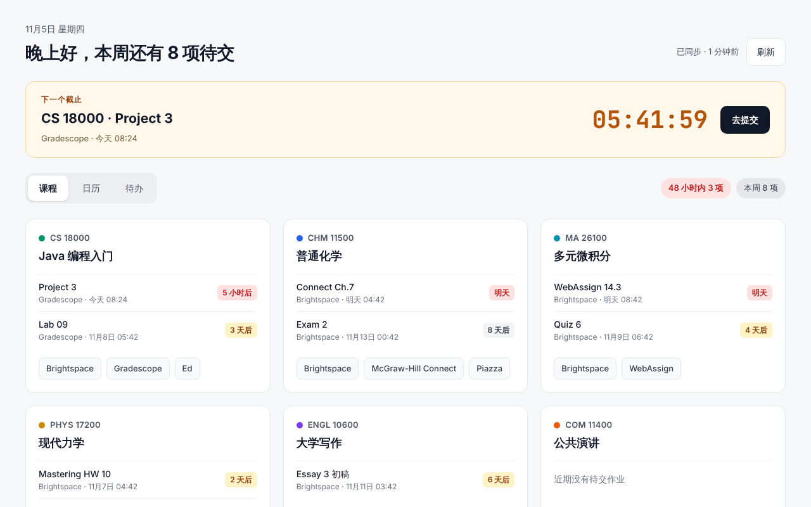

所有截止日期，
一个新标签页。
不用再一门一门点进 Brightspace，也不用在 Gradescope、WebAssign、Pearson 之间来回登录。打开新标签页，作业、倒计时和教材入口都在这里。
添加到 Chrome 看看能做什么免费 · 开源 · 支持 Chrome 和 Edge · 目前适用于普渡大学的 Brightspace

每门课一张卡片
接下来要交的作业、还剩几天，以及 Brightspace、Gradescope、教材、讨论区的一键入口。
下一个截止
最近的截止永远在最上面，实时倒计时，点“去提交”直接打开作业页面。
日历和待办
周视图、月视图看清哪天作业扎堆；待办清单可以勾选完成，已提交的自动打勾。
自动同步
借用浏览器已有的登录状态，每 30 分钟同步一次。读不到的作业可以手动添加。
你的数据只在你的电脑上
DueBoard 不上传、不收集、不分析任何数据，也不接触你的密码。卸载插件，数据随之删除。阅读隐私政策